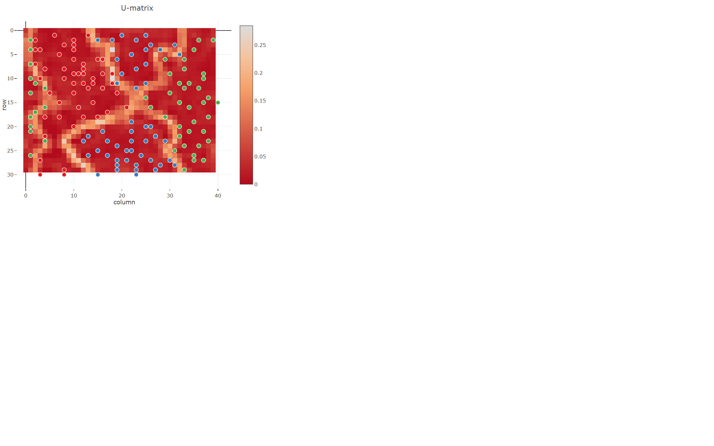
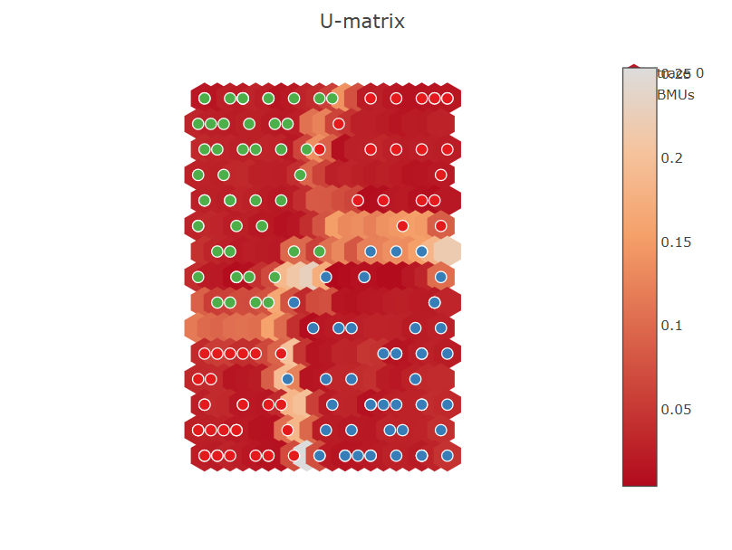
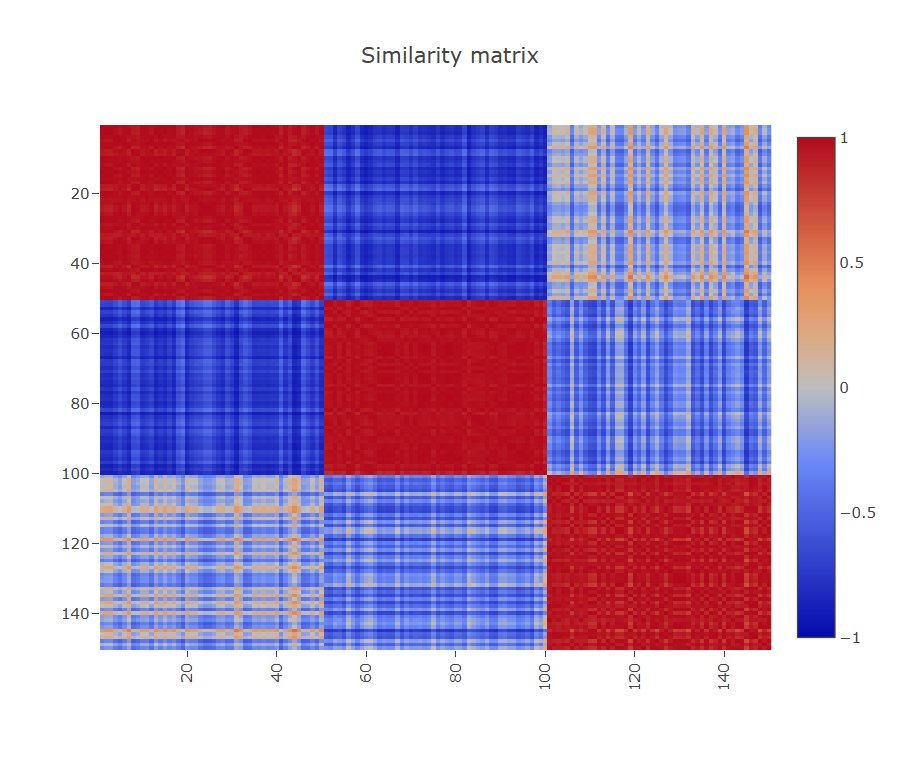
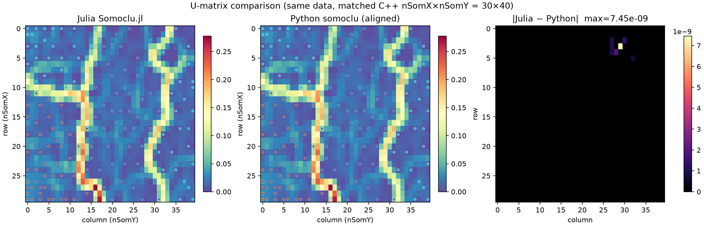

Visualization
Plot helpers return PlotlyLight figures (interactive HTML). Pass filename="…" to write a standalone HTML file.
using Somoclu, Random
Random.seed!(1)
som = Som(40, 30; maptype="toroid", gridtype="rectangular")
train!(som, rand(Float32, 2, 150); epochs=10)
view_umatrix(som; bestmatches=true, colorbar=true)
view_component_planes(som; dimensions=1:2)
view_activation_map(som; data_index=1)
view_similarity_matrix(som)
view_umatrix(som; filename="umatrix.html")Example figures
U-matrix on a rectangular toroid map (view_umatrix, with BMUs):

Hexagonal grid U-matrix (gridtype="hexagonal" / legacy "square" distances):

Sample–sample similarity of activation vectors (view_similarity_matrix):

Julia vs Python U-matrix on matched data (numerical check):

Helpers
codebook_plane— reshape one codebook dimension to the map gridget_surface_state— distances from samples to all neurons